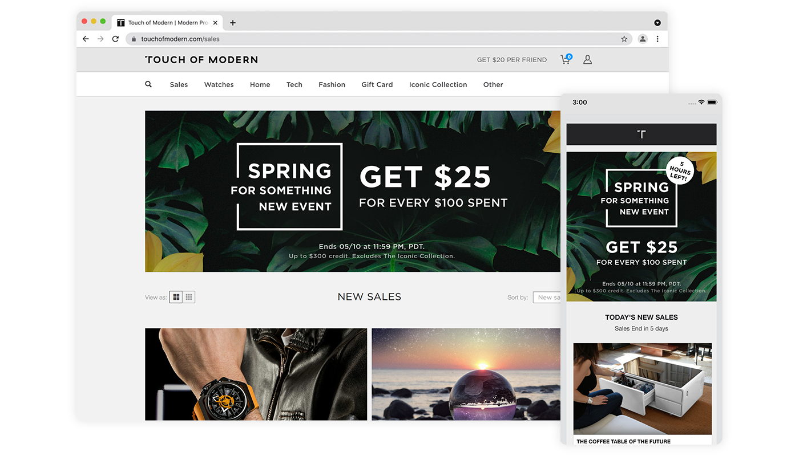

Digital Design System
Overview
At Touch of Modern (TOMO), an e-commerce website for modern men, we promote promotions and sales daily via emails and digital ads on a tight deadline. However, we lack a proper system.
The goal of this project was to create a system that streamlined the digital design process for both myself and other teams.
Responsibilities: Visual Design, Documentation, Information Architecture
01. Research & Analysis
üòü Problems with the Current System
As the sole designer of these daily digital assets, it was difficult to work efficiently without a proper system, especially with a tight deadline. I evaluated the current process and found the following problems:
- Teams forgetting to put in the correct design specifications (e.g. Copywriters going over the specified character limit)
- Not getting design feedback from stakeholders
- Having to create individual design files for each banner size
- Lack of documentation to onboard new designers
✨ Opportunities to Improve
In order to create a better and more efficient system, I planned the following:
- Improve communication across all teams
- Refine design files to produce assets more efficiently
- Produce better documentation for future reference
02. Design
üìö Style Guides
The daily promotions and sales release is a collaboration between various teams. However, many teams would forget what design specifications we would need from them. Thus, I created the following style guides to help teams determine the appropriate information to submit to the design team (e.g., banner sizes, copy character limits, photos). Additionally, these guides would make onboarding new designers more efficient.

✒️ Design Templates
After all teams have completed their sections, a design request with design specifications is sent to me to create the necessary creatives. To make asset production more efficient, I created templates that allow me to produce assets quickly.

How do these templates work?
In both templates, I inputted all the banner sizes we typically use to avoid having multiple files for each size. With the simple click of a button, I can easily edit each individual banner size. Here is a sample of how it works:

üí¨ Feedback from Stakeholders
After I created a few options, I completed multiple rounds of feedback with the marketing and merchandising team via a Slack channel. At this step, we discussed and finalized which design and layout worked best.

✔️ Final Checks & Deliverables
One final round of feedback was completed to ensure that the copy and banner sizes were correct before exporting. After the files were exported, we ensured that all banners were displayed correctly on all platforms. If there were no errors, then woo hoo, we are done!
Below are a few examples of email and ad banners I designed:

{kind=link}
{kind=link}
{kind=link}
{kind=link}
{kind=link}
03. Results & Takeaways
üìä Results
- Received feedback from managers and designers that it was helpful to have everything in one place.
- Was able to produce assets more efficiently with the new design files.
- The feedback Slack channel has improved the quality of assets and allowed everyone to have a say. The channel is still very active to this day.
üí° Lessons Learned
- Need to document everything ahead of time; a lot of prior knowledge from previous designers was never documented.
üìÖ Next Steps
- Find a better place to store these guides instead of Google Drive
- Make it more easily accessible to new employees